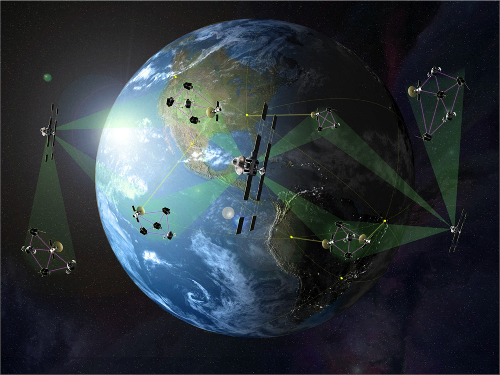

Space Communications
Written by Shyam Ashokan ..... 19 December 2024
Exploring the cosmos has been a fascination of humanity for decades, and space exploration has long been a cornerstone of this monumental quest. From the earliest days of sending simple telemetry data from simplistic satellites to modern advanced interplanetary networks of satellites, the ability to transmit information across vast distances in space has been crucial for scientific discovery, technological advancements and now – the BeanSat project. For our project, as we relay camera footage to conduct our biological analysis, the challenges and innovations of space communication take on new horizons.
Space communication begins with 2 fundamental ideas: a transmitter and a receiver. The transmitter encodes a message into electromagnetic waves through modulation, changing the properties of the wave to represent the data. Radio waves have always been the traditional go-to as the primary medium for this process, but microwaves and optical signals with photons are becoming more common in advanced modern systems. The transmitted data is sent via an antenna into the void of space, travelling across vast distances until it hits the receiver where it’s demodulated and decoded.
Rather simple right? NO! While a straightforward process, it’s fraught with challenges that require rather sophisticated solutions. One major difficulty is the presence of interference. As communications travel along the expanse of space – a dynamic and interference-rich environment, the quality of their data dwindles. This is because radiation from celestial bodies and atmospheric phenomena like ionospheric scintillations and weather events can disrupt signal propagation. In fact, the Earth’s atmosphere itself acts as a filter, absorbing certain frequencies and distorting others. While this may not be a problem for our project, given the BeanSat will only ever go up about 400m, this becomes a serious issue for satellites deeper in the atmosphere such as those orbiting other planets like Mars. To make sure accurate data is received, NASA has said they use methods of error detection and correction, including using computer algorithms that interpret noisy transmissions as usable data including Fourier transforms.
Another major difficulty is simply the sheer distance from Earth satellites tend to be, and the latency this introduces. With highly specialised undersea and fibre-optic cables on Earth, even those with terrible Internet don’t tend to experience data taking more than a few seconds to be sent around the world – almost instantaneously. But of course, it’s nowhere near instant, and at the intergalactic scale this adds up. For a sense of scale, a message to be sent to some of our farthest planet - just the one way trip – takes 24 minutes to travel roughly 250 million miles. While a major cause of this is the so-called “universal speed limit”, the speed of light, additional delays begin to arise from processing and encoding. Minimising these secondary interactions becomes critical for constantly dynamic processes, such as the biological growth our team will be monitoring. As the software lead, this is included in some of the logical issues I must face, alongside the solutions to this latency such as bulk buffering to mitigate latency being an issue at all. For our project, data processing also occurs only at the ground station after it’s been transmitted to minimise any time loss. Other techniques have also been seen used generally in space communication such as Automatic Repeat Request and Forward Error Correction; both algorithms ensure critical data reaches its destination even in the event of intermittent link failures.
And all of this is simply the present-day! As humanity continues to push the boundaries of exploration, the demands of space exploration will only grow. Research into future advancements like quantum communication for both high speed data transmission and unparalleled data security, optical lasers for high bandwidth and self-autonomous relay networks for interplanetary missions using unsupervised machine learning models. Ultimately, space communication is more than just a technical achievement, it’s a thread that connects us to the grand unknown, and missions like BeanSat highlight the challenges and triumph our current technology is capable of - a testament to our ingenuity and perseverance.